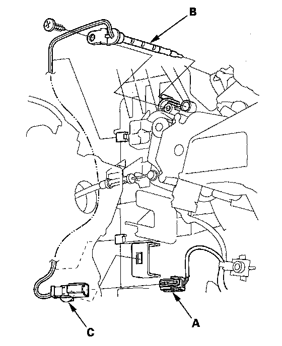

Front Evaporator Temperature Sensor Replacement
Front Evaporator Temperature Sensor Replacement1. Remove the driver's dashboard undercover.
2. Remove the TPMS control unit.

3. Disconnect the connector (A) from the front evaporator temperature sensor (B), then remove the connector clip (C). Remove the self-tapping screw and the front evaporator temperature sensor.
4. Install the sensor in the reverse order of removal.